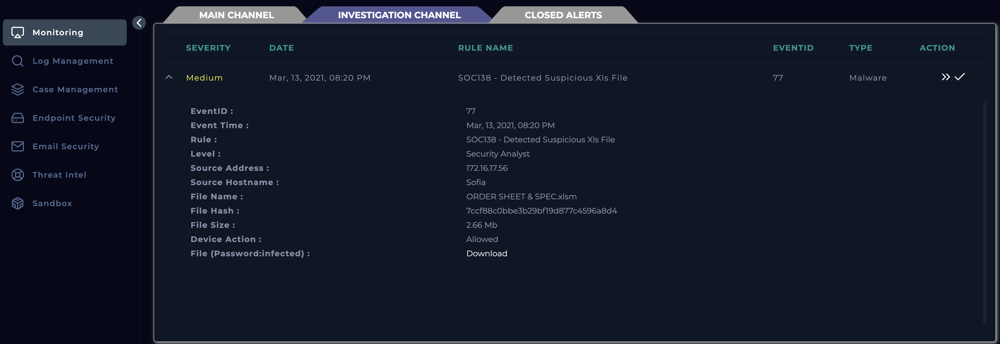
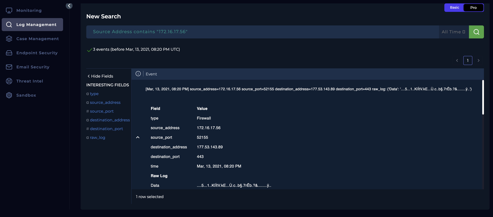
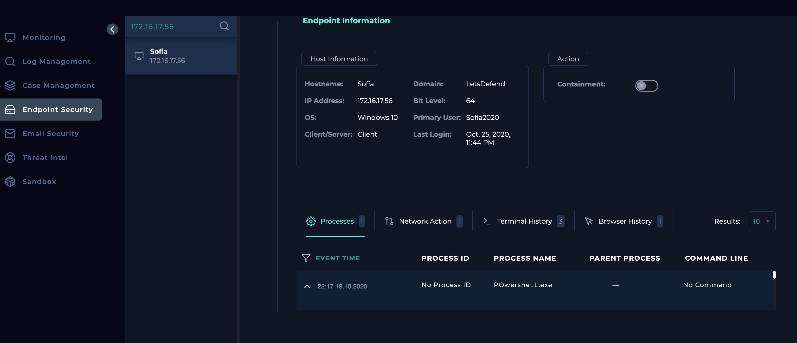
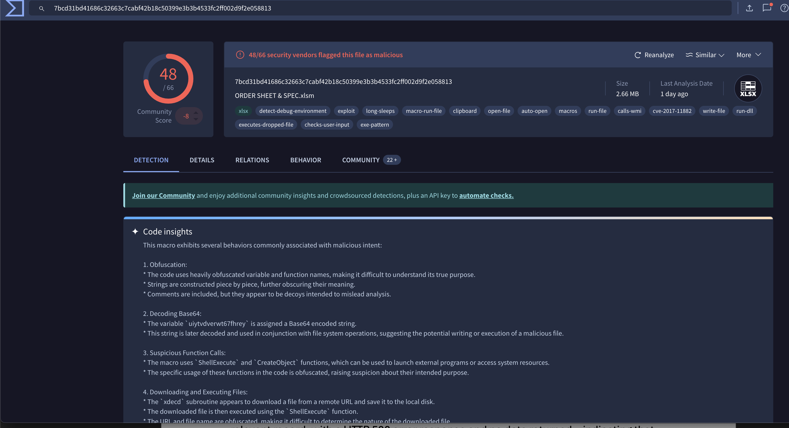
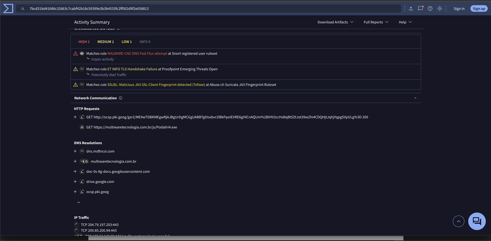

Objective
To investigate the suspicious .xls file detected by the SOC, determine whether it contains malicious macros or indicators of compromise (IOCs), analyze its behavior using dynamic and static analysis techniques, and assess if it poses a threat to the organization. Based on the findings, take appropriate remediation actions and document the incident to improve detection rules and future response.
Investigation steps
Reviewed the alert to understand the nature, which shows the event took place on 13/03/21 at 20:20 where a suspicious file named ORDERSHEET &SPEC.xlsm was detected on the source host of Sofia. Proceeded with the creation of the case.

Used the Log Management module to filter for the incident using the source address on the initial alert. However, could not find anything stating whether the malicious file was quarantined.

Navigated to the Endpoint Security module and searched for the user named Sofia, but even then could not find any information within the processes, network actions, terminal history and browser history stating the file was quarantined. Therefore assuming the file has not been quarantined due to lacking any sign of quarantine taking place.

VirusTotal was used to analyse the malicious excel file, which provided insight in the file being flagged as malicious with 48/66 security vendors flagged this file as malicious and this file has several malicious behaviours embedded. Within the Behavior tab, we can see this file has twon network communication HTTP requests where one is not identified as malicious while the second one is flagged as malicious – phishing.


Analysis
On March 13, 2021, at 20:20, an alert titled SOC138 - Detected Suspicious Xls File was triggered, indicating that a suspicious macro-enabled Excel file (ORDERSHEET &SPEC.xlsm) was detected on the endpoint belonging to the user Sofia. Initial review in the SIEM confirmed the detection event, but follow-up investigation through log management and endpoint security tools did not reveal any indicators that the file had been quarantined. Static analysis via VirusTotal revealed a high threat score, with 48 out of 66 security vendors flagging the file as malicious. Additionally, dynamic behavior analysis uncovered that the file made two HTTP requests—one benign and another classified as phishing. The malicious HTTP request was directed to the IP 179.43.175.98, confirmed through log correlation. Threat intelligence validation using AbuseIPDB further reinforced the suspicion, as the IP had a history of malicious activity. These findings suggest that the Excel file likely served as a dropper or C2 beacon for phishing or other malicious payloads. As no automatic remediation was observed, it is assumed the file remained active post-detection. Appropriate remediation steps, including containment and rule tuning, were recommended to prevent future occurrences.